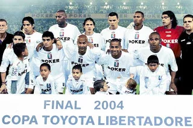
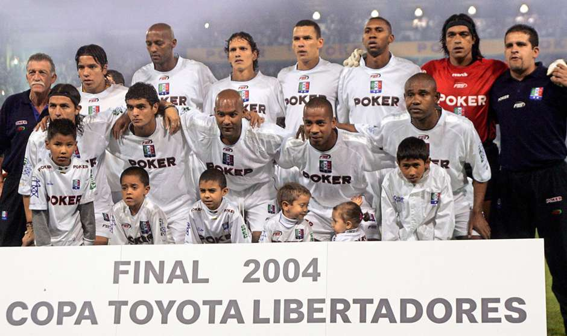

ONCE CALDAS 2004

Once Caldas de Colombia se consagró campeón por primera y única vez en su historia.
Gracias al título, jugó ante el Porto de Portugal la Copa Intercontinental 2004,
última edición del certamen, y la Recopa Sudamericana 2005 frente a Boca Juniors de Argentina,
casualmente el mismo rival al que derrotó en la final de la presente competición.
Se clasificó, también, a la Fase de grupos de la Copa Libertadores 2005.

| Once Caldas |
Campeon |
1950 |
| Once Caldas |
Campeon |
2003 |
| Once Caldas |
Campeon |
2009 |
| Once Caldas |
Campeon |
2010 |